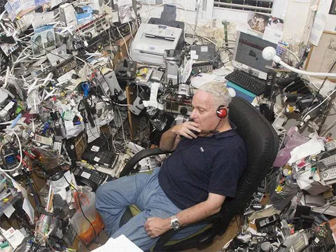

Продолжим:
6. Zero unread. Иногда я вижу, что у коллег висят десятки непрочитанных чатов с кучей сообщений. Как вы вообще в этом живете? Уверены ли вы, что ваши коммуникации эффективны? Возможно, у меня ОКР, но я не терплю каунтеров с непрочитанными сообщениями. Вполне реально найти несколько минут хотя бы раз в пару часов, чтобы просмотреть все входящие.
6.1. Поставьте встречи в календаре не на ровное время, а чтобы они начинались в :05 или :35. За 25/55 минут вы на встрече успеете ровно столько же (если обсудить вопрос можно за 30 минут, значит, можно и за 25, а если не получится за 25, то и 30 не спасут), зато у вас появится 5 минут, чтобы между встречами просмотреть телегу (а заодно - зайти в туалет, дойти до переговорки и не опоздать на следующую встречу).
6.2. Все чаты, которые вам не обязательно читать подряд, унесите в архив. Поиском нужное найдете, если вас призовут там - оно всплывет, если надо будет ознакомиться с чатом - сами туда зайдете. Зато этот чат не будет мозолить вам глаза и мешаться в общем списке. Все, что не в архиве, должно быть всегда полностью прочитано.
6.3. Мы тут не волки-одиночки, мы работаем в коллективе, а для этого нужно коммуницировать и отвечать на коммуникации. Даже если вы сейчас заняты чем-то важным, возможно в каком-то чате/личке ваша реакция важнее, чем то, что вы делали! Особенно, если вы руководитель. Отсутствие вашей реакции и ответа может нести больше негативного эффекта, чем то, что вы отвлечетесь от своих дел.
6.4. Если вы сейчас (с sla час-два) не можете ответить (супер-заняты, или ответ требует какой-то подготовки) - ответьте "вижу, вернусь" и сразу запишите в тудушницу это дело. К тудушнице тоже надо возвращаться минимум несколько раз в день.
Кстати, некоторые из этих лайфхаков я позаимствовал у нашего предводителя Ромы Маресова, который в своем канале https://t.me/media_rare делится советами, рассуждает о менеджменте и болеет за Спартак.
А у вас сколько сейчас непрочитанных сообщений/чатов? Можете ли вы спокойно спать или есть, если кто-то ждет вашего ответа?
